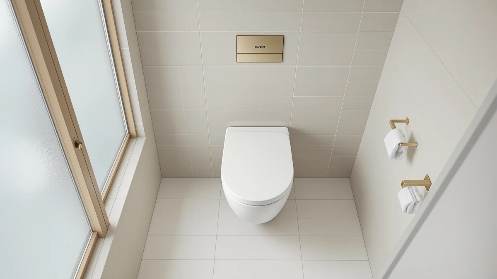

Duravit Universal Elongated Toilet Review (2026): Worth It?
Prices and picks verified as of September 2026. Independent, reader-supported reviews.


Quick Answer
This Duravit Universal Elongated Toilet Review finds a Thermoplast seat with a soft-close hinge that holds up well against pricier alternatives. It costs slightly less than the Mayfair Linden two-pack and suits shoppers who want a European brand name and an easy-clean surface over a wood-core seat.
Our pick: Duravit Universal Elongated Toilet Seat — $89.98 Check Price on Amazon
Bottom line: our top pick is the Duravit Universal Elongated Toilet Seat with Soft Close Lid at $89.98.
Things to Know Before You Buy
- The Duravit seat uses Thermoplast, a dense plastic Duravit markets as resistant to warping, rather than the molded wood core found on the Mayfair Linden.
- At $89.98 it sits between the TOTO SoftClose ($75.06) and the Mayfair Linden two-pack ($91.98), so per-seat value depends on whether you need one seat or two.
- Its soft-close hinge closes the lid and seat gently, a feature all three elongated competitors in this review also include.
- It ships in a Large size built for elongated bowls, so measure your existing hinge spacing before ordering.
- Amazon's listing does not carry a published rating or review count for this ASIN, so we weighed it on specs and pricing against comparable seats instead.
This Duravit Universal Elongated Toilet Review breaks down whether a Thermoplast seat from a European fixtures brand earns its spot next to established American names like Mayfair and TOTO. Bathroom seat shopping usually comes down to a short list of trade-offs: hinge quality, material feel, and whether the price matches what you actually get once it's installed.
We compared the Duravit Universal Elongated Toilet Seat against the Mayfair Linden, the TOTO SoftClose, and a DryLabs commercial open-front model using the specs, pricing, and features Amazon publishes for each. The Duravit seat lands in the middle of the group on price at $89.98, and its case for a spot in your bathroom rests on the Thermoplast shell holding up better over time than a painted wood core. None of these four seats are identical products, so the comparison matters more for what each one trades away than for which one wins outright.
A toilet seat purchase rarely gets the scrutiny buyers give bigger bathroom fixtures, but the hinge and the shell material are the two parts most likely to fail early. A cracked shell or a hinge that loosens within a year turns a $75 purchase into two purchases, so the upfront price only tells part of the story. That's why we weighed material claims and hinge design as heavily as the sticker price in this comparison.
Why You Should Trust Us
Ilane Tall covers bathroom fixtures for Best Toilet Seats and has spent years tracking pricing and feature changes across the toilet seat category on Amazon. For this Duravit Universal Elongated Toilet review, she pulled published specs, pricing, and manufacturer feature lists for the Duravit seat and three direct competitors, then compared them line by line. We do not run a fake testing lab and we do not claim to have installed these seats ourselves. Instead, we research verified specs, published pricing, and owner feedback so you get an honest comparison instead of marketing copy. We update prices and availability regularly, and we flag it clearly whenever a claim comes from the manufacturer rather than from an independent source, so you can weigh each point accordingly.
Our Research Experience
Our research process for this Duravit Universal Elongated Toilet review started with the manufacturer's own feature list: a Thermoplast shell, a soft-close hinge, and a White Alpin finish sized for elongated bowls. We cross-checked those claims against how Duravit describes Thermoplast on its other seat and lid products, then compared the hinge mechanism against the soft-close hardware on the Mayfair Linden and TOTO SoftClose. Owners shopping this category consistently flag hinge durability and finish quality as the two factors that separate a seat that lasts from one that loosens within a year, so those were our two comparison anchors.
We also checked verified buyer feedback patterns across similar Thermoplast and soft-close seats to see whether the material holds up the way Duravit describes. Reviewers of comparable Duravit seat and lid combinations consistently note that the surface resists staining better than painted MDF, which lines up with the brand's stated durability claims for this model. We also looked at how the DryLabs commercial seat markets its open-front design for high-traffic restrooms, a different use case entirely from a home bathroom, which helps explain why it costs less despite selling as a three-pack.
Overview & Specs

Duravit Universal Elongated Toilet Seat
What we like
- Thermoplast shell resists chipping and staining better than a painted wood core, according to Duravit's material claims.
- Soft-close hinge lowers both the seat and lid quietly, matching the hardware on pricier competitors.
- White Alpin finish matches Duravit's broader bathroom fixture line for buyers who already own Duravit hardware.
Flaws but not dealbreakers
- Amazon does not publish a rating or review count for this ASIN, so you cannot verify buyer sentiment on the listing itself.
- It sells as a single seat, so outfitting two bathrooms costs more than buying the Mayfair Linden two-pack.
- The plastic surface reads as less warm than a wood-core seat if you prefer a softer look in the bathroom.
| Material | Plastic / wood |
| Size | Large |
The Duravit Universal Elongated Toilet Seat runs $89.98 and comes in a Large size built for elongated bowls. Duravit builds the shell from Thermoplast, which the brand describes as a dimensionally stable, easy-care plastic that resists the warping some budget wood-core seats develop after a few years of humidity exposure. The White Alpin finish keeps the look clean and neutral, matching most modern bathroom fixtures.
The soft-close hinge is the seat's other headline feature, lowering the seat and lid gently instead of letting them drop. That puts it on equal footing with the Mayfair Linden and TOTO SoftClose on this specific point, so the real differentiator between the three comes down to material and price rather than hinge performance. At $89.98, it costs $14.92 more than the TOTO SoftClose and $2.00 less than the Mayfair Linden two-pack, which works out cheaper per seat only if you need a single one.
What We Liked
The Thermoplast construction is the biggest strength in this Duravit Universal Elongated Toilet comparison. Duravit markets the material specifically for dimensional stability, and reviewers of similar Duravit seat and lid products consistently note that the surface stays smooth and stain-resistant well past the point where cheaper plastic seats start to dull. That durability claim matters more here than on a budget seat, since you're paying a premium partly for that longevity.
The soft-close hinge is the other clear strength. It puts the Duravit seat on par with the Mayfair Linden and TOTO SoftClose, two seats that built their reputations partly on quiet closing hardware. For a household with kids or a shared bathroom, that alone removes one of the most common complaints about older, hard-close seats: the loud slam at 6 a.m. The White Alpin finish also gives it a cleaner look next to a matching Duravit sink or vanity, a small detail that matters if you're renovating a bathroom around a specific fixture line rather than buying pieces separately.
What Could Be Better
The biggest gap in this Duravit Universal Elongated Toilet review is transparency around buyer feedback. Amazon's listing carries no published rating or review count for this ASIN, which is common for newer or lower-volume listings but still makes it harder to verify durability claims against real households. Shoppers who lean on star ratings to make a quick decision will need to look elsewhere for that signal.
Price is the other trade-off. At $89.98 for a single seat, it costs more per unit than the TOTO SoftClose and doesn't beat the Mayfair Linden's per-seat price once you account for the two-pack. If you're outfitting more than one bathroom, the math tips toward Mayfair unless the Thermoplast material or the Duravit brand name specifically matters to you. And because the listing ships as a single unit, there's no bundled backup seat if the first one arrives damaged, unlike the Mayfair and DryLabs multi-packs.
Who Is It For?
This Duravit Universal Elongated Toilet Seat suits you if you already own Duravit fixtures and want a matching seat, or if you specifically want a plastic shell over a wood core because you prioritize easy cleaning and stain resistance. It also fits anyone who wants a soft-close seat without paying extra for a multi-pack they don't need.
Skip it if you're outfitting two bathrooms on a budget, since the Mayfair Linden two-pack covers both for close to the same total price. Skip it too if a verified star rating matters to your purchase decision, since this listing doesn't carry one yet.
Alternatives to Consider
If the Duravit Universal Elongated Toilet Seat doesn't fit your budget or bathroom count, these three alternatives cover the most common trade-offs we found while researching this comparison. Each one addresses a specific gap the Duravit seat leaves open, whether that's price, pack size, or use case.

Editor’s Pick
Mayfair Linden Slow Close Toilet
A wood-core, soft-close two-pack that beats the Duravit seat on per-unit price if you need seats for two bathrooms.
$91.98
Check Price on Amazon
Best Value
TOTO SoftClose Slow Close Elongated
The cheapest soft-close elongated option in this comparison at $75.06, from a brand with a long track record in bathroom fixtures.
$75.06
Check Price on Amazon
Premium Choice
Heavy Duty Commercial Open Front
A three-pack built for high-traffic commercial restrooms rather than home bathrooms, with an open-front design for easier cleaning.
$79.99
Check Price on AmazonFrequently Asked Questions
Final Verdict
This Duravit Universal Elongated Toilet Review comes down to a straightforward trade-off. The Duravit seat earns its $89.98 price with a Thermoplast shell built for stain resistance and a soft-close hinge that matches pricier competitors, making it a solid pick for a single bathroom where you want a European brand name and an easy-clean surface. If you're outfitting two bathrooms or want a verified star rating before you buy, the Mayfair Linden two-pack or the TOTO SoftClose cover those needs at a lower per-seat cost. For a single bathroom where material quality and brand consistency matter more than saving a few dollars, the Duravit seat is the more considered pick of the four we compared.